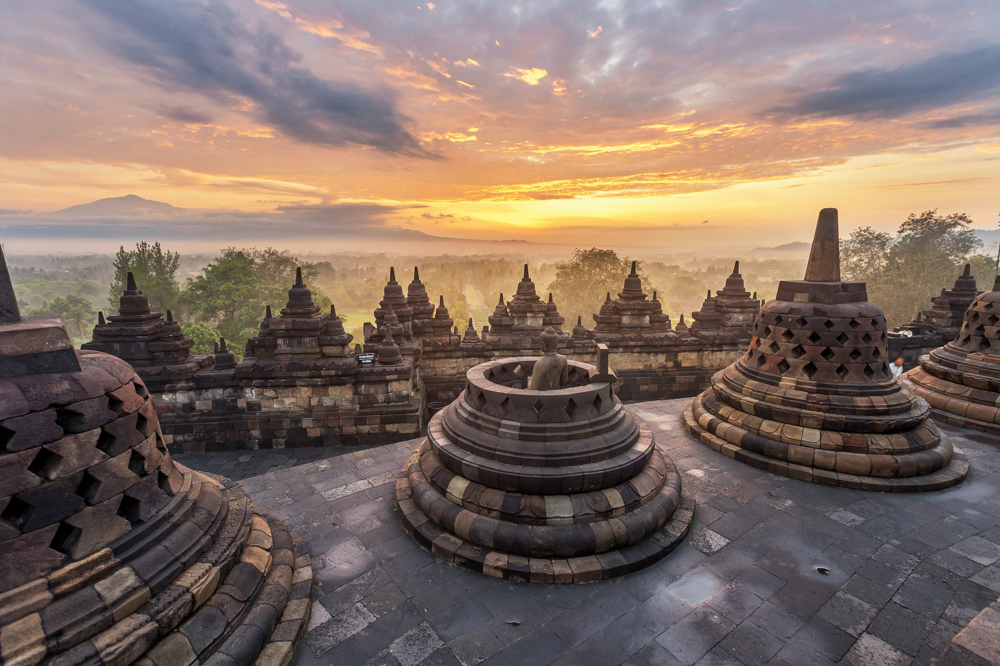
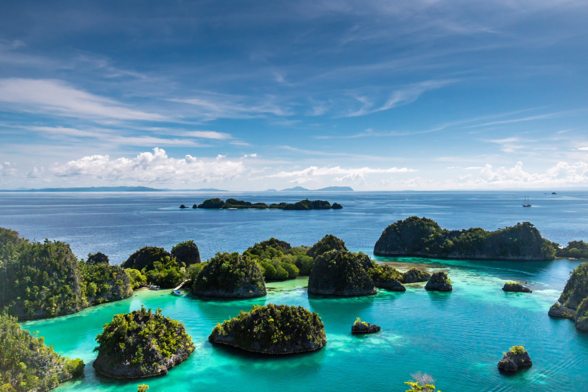
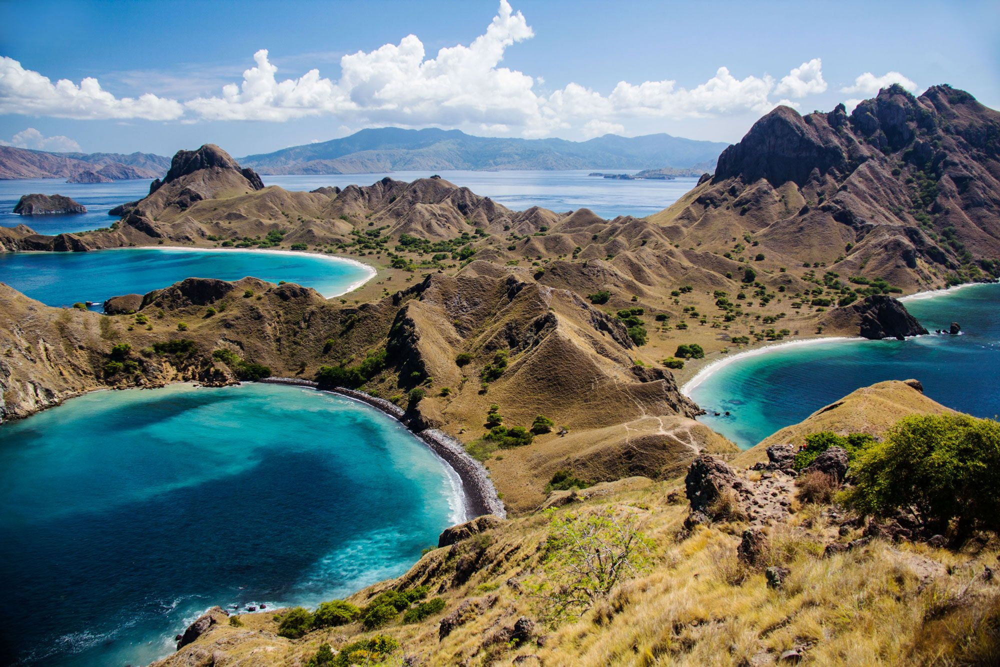

|

BorobudurBorobudur, dengan kemegahannya sebagai kompleks candi Budha di Magelang, Jawa Tengah, menawarkan pengalaman wisata yang tak terlupakan, sekaligus menunjukkan warisan monumental dan arsitektur yang menakjubkan. .....baca selengkapnya |

Raja AmpatRaja Ampat, surganya penyelam di Papua Barat, Indonesia. Terkenal dengan keindahan bawah lautnya yang luar biasa, menjadikannya destinasi wisata yang menakjubkan untuk para pecinta alam.....baca selengkapnya |

Pulau KomodoPulau Komodo, berlokasi di Nusa Tenggara Timur, Indonesia, mempesona dengan keunikan dan keindahan alamnya yang memikat. Pulau ini terkenal sebagai rumah bagi hewan purba, Komodo, yang menjadi ikon dan daya tarik utama destinasi ini......baca selengkapnya |

Danau SentaniDanau Sentani, terletak di Provinsi Papua, Indonesia, adalah persembahan alam yang menakjubkan dengan pesona danau air tawarnya yang memukau. Dikelilingi oleh pegunungan dan hamparan hijau, Danau Sentani menjadi destinasi yang menenangkan dan penuh keindahan......baca selengkapnya |

BaliBali, surganya pulau tropis di Indonesia, memukau dengan keindahan alamnya yang mempesona, pantai pasir putih yang menakjubkan, dan budaya yang kaya. Pulau ini menawarkan pengalaman wisata yang mendalam, mulai dari ritual keagamaan yang khas, tarian tradisional......baca selengkapnya |